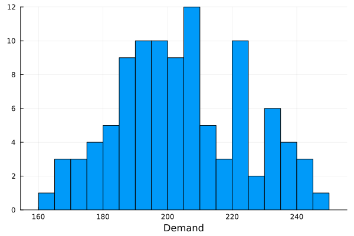
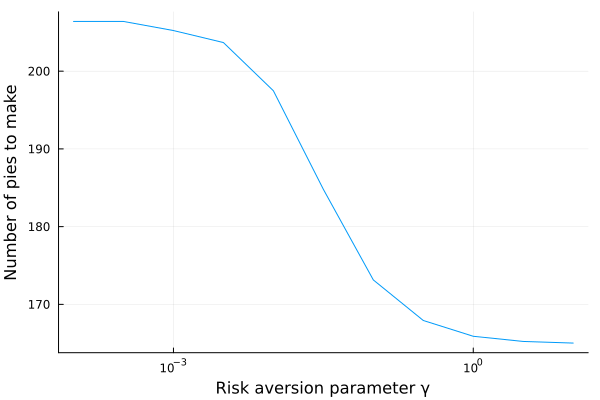

Example: two-stage newsvendor
This tutorial was generated using Literate.jl. Download the source as a .jl file. Download the source as a .ipynb file.
The purpose of this tutorial is to demonstrate how to model and solve a two-stage stochastic program.
It is based on the Two stage stochastic programs tutorial in JuMP.
This tutorial uses the following packages
using JuMPusing SDDPimport Distributionsimport ForwardDiffimport HiGHSimport Plotsimport StatsPlotsimport StatisticsBackground
The data for this problem is:
D = Distributions.TriangularDist(150.0, 250.0, 200.0)N = 100d = sort!(rand(D, N));Ω = 1:NP = fill(1 / N, N);StatsPlots.histogram(d; bins = 20, label = "", xlabel = "Demand")
Kelley's cutting plane algorithm
Kelley's cutting plane algorithm is an iterative method for maximizing concave functions. Given a concave function $f(x)$, Kelley's constructs an outer-approximation of the function at the minimum by a set of first-order Taylor series approximations (called cuts) constructed at a set of points $k = 1,\ldots,K$:
\[\begin{aligned} f^K = \max\limits_{\theta \in \mathbb{R}, x \in \mathbb{R}^N} \;\; & \theta\\ & \theta \le f(x_k) + \nabla f(x_k)^\top (x - x_k),\quad k=1,\ldots,K\\ & \theta \le M, \end{aligned}\]
where $M$ is a sufficiently large number that is an upper bound for $f$ over the domain of $x$.
Kelley's cutting plane algorithm is a structured way of choosing points $x_k$ to visit, so that as more cuts are added:
\[\lim_{K \rightarrow \infty} f^K = \max\limits_{x \in \mathbb{R}^N} f(x)\]
However, before we introduce the algorithm, we need to introduce some bounds.
Bounds
By convexity, $f(x) \le f^K$ for all $x$. Thus, if $x^*$ is a maximizer of $f$, then at any point in time we can construct an upper bound for $f(x^*)$ by solving $f^K$.
Moreover, we can use the primal solutions $x_k^*$ returned by solving $f^k$ to evaluate $f(x_k^*)$ to generate a lower bound.
Therefore, $\max\limits_{k=1,\ldots,K} f(x_k^*) \le f(x^*) \le f^K$.
When the lower bound is sufficiently close to the upper bound, we can terminate the algorithm and declare that we have found an solution that is close to optimal.
Implementation
Here is pseudo-code fo the Kelley algorithm:
- Take as input a convex function $f(x)$ and a iteration limit $K_{max}$. Set $K = 1$, and initialize $f^{K-1}$. Set $lb = -\infty$ and $ub = \infty$.
- Solve $f^{K-1}$ to obtain a candidate solution $x_{K}$.
- Update $ub = f^{K-1}$ and $lb = \max\{lb, f(x_{K})\}$.
- Add a cut $\theta \ge f(x_{K}) + \nabla f\left(x_{K}\right)^\top (x - x_{K})$ to form $f^{K}$.
- Increment $K$.
- If $K > K_{max}$ or $|ub - lb| < \epsilon$, STOP, otherwise, go to step 2.
And here's a complete implementation:
function kelleys_cutting_plane( # The function to be minimized. f::Function, # The gradient of `f`. By default, we use automatic differentiation to # compute the gradient of f so the user doesn't have to! ∇f::Function = x -> ForwardDiff.gradient(f, x); # The number of arguments to `f`. input_dimension::Int, # An upper bound for the function `f` over its domain. upper_bound::Float64, # The number of iterations to run Kelley's algorithm for before stopping. iteration_limit::Int, # The absolute tolerance ϵ to use for convergence. tolerance::Float64 = 1e-6,) # Step (1): K = 1 model = Model(HiGHS.Optimizer) set_silent(model) @variable(model, θ <= upper_bound) @variable(model, x[1:input_dimension]) @objective(model, Max, θ) x_k = fill(NaN, input_dimension) lower_bound, upper_bound = -Inf, Inf while true # Step (2): optimize!(model) x_k .= value.(x) # Step (3): upper_bound = objective_value(model) lower_bound = min(upper_bound, f(x_k)) println("K = $K : $(lower_bound) <= f(x*) <= $(upper_bound)") # Step (4): @constraint(model, θ <= f(x_k) + ∇f(x_k)' * (x .- x_k)) # Step (5): K = K + 1 # Step (6): if K > iteration_limit println("-- Termination status: iteration limit --") break elseif abs(upper_bound - lower_bound) < tolerance println("-- Termination status: converged --") break end end println("Found solution: x_K = ", x_k) returnendkelleys_cutting_plane (generic function with 2 methods)Let's run our algorithm to see what happens:
kelleys_cutting_plane(; input_dimension = 2, upper_bound = 10.0, iteration_limit = 20,) do x return -(x[1] - 1)^2 + -(x[2] + 2)^2 + 1.0endK = 1 : -4.0 <= f(x*) <= 10.0
K = 2 : -2.25 <= f(x*) <= 10.0
K = 3 : -5.3125 <= f(x*) <= 10.0
K = 4 : 0.83984375 <= f(x*) <= 5.625
K = 5 : -1.3438585069444455 <= f(x*) <= 1.9791666666666667
K = 6 : 0.4532453748914933 <= f(x*) <= 1.7513020833333333
K = 7 : -2.794810401068801 <= f(x*) <= 1.3444010416666663
K = 8 : 0.19507712328139326 <= f(x*) <= 1.3179100884331594
K = 9 : 0.9073862122310157 <= f(x*) <= 1.3022015061077878
K = 10 : 0.7292616273896162 <= f(x*) <= 1.2835882279084943
K = 11 : 0.9856775767620292 <= f(x*) <= 1.1542808575464905
K = 12 : 0.9521967150117504 <= f(x*) <= 1.0538679846579115
K = 13 : 0.9907765147617908 <= f(x*) <= 1.0341945633777465
K = 14 : 0.990619313815891 <= f(x*) <= 1.0168012962055821
K = 15 : 0.9997569528573889 <= f(x*) <= 1.010937796651451
K = 16 : 0.9955736574995747 <= f(x*) <= 1.0023159378334365
K = 17 : 0.9981907645826057 <= f(x*) <= 1.001070011161672
K = 18 : 0.999293284088297 <= f(x*) <= 1.0010295293971427
K = 19 : 0.9997619192401398 <= f(x*) <= 1.0005033714074143
K = 20 : 0.9999234387181322 <= f(x*) <= 1.0003705497285347
-- Termination status: iteration limit --
Found solution: x_K = [1.0074056501552666, -1.9953397824465389]L-Shaped theory
The L-Shaped method is a way of solving two-stage stochastic programs by Benders' decomposition. It takes the problem:
\[\begin{aligned} V = \max\limits_{x,y_\omega} \;\; & -2x + \mathbb{E}_\omega[5y_\omega - 0.1(x - y_\omega)] \\ & y_\omega \le x & \quad \forall \omega \in \Omega \\ & 0 \le y_\omega \le d_\omega & \quad \forall \omega \in \Omega \\ & x \ge 0. \end{aligned}\]
and decomposes it into a second-stage problem:
\[\begin{aligned} V_2(\bar{x}, d_\omega) = \max\limits_{x,x^\prime,y_\omega} \;\; & 5y_\omega - x^\prime \\ & y_\omega \le x \\ & x^\prime = x - y_\omega \\ & 0 \le y_\omega \le d_\omega \\ & x = \bar{x} & [\lambda] \end{aligned}\]
and a first-stage problem:
\[\begin{aligned} V = \max\limits_{x,\theta} \;\; & -2x + \theta \\ & \theta \le \mathbb{E}_\omega[V_2(x, \omega)] \\ & x \ge 0 \end{aligned}\]
Then, because $V_2$ is convex with respect to $\bar{x}$ for fixed $\omega$, we can use a set of feasible points $\{x^k\}$ construct an outer approximation:
\[\begin{aligned} V^K = \max\limits_{x,\theta} \;\; & -2x + \theta \\ & \theta \le \mathbb{E}_\omega[V_2(x^k, \omega) + \nabla V_2(x^k, \omega)^\top(x - x^k)] & \quad k = 1,\ldots,K\\ & x \ge 0 \\ & \theta \le M \end{aligned}\]
where $M$ is an upper bound on possible values of $V_2$ so that the problem has a bounded solution.
It is also useful to see that because $\bar{x}$ appears only on the right-hand side of a linear program, $\nabla V_2(x^k, \omega) = \lambda^k$.
Ignoring how we choose $x^k$ for now, we can construct a lower and upper bound on the optimal solution:
\[-2x^K + \mathbb{E}_\omega[V_2(x^K, \omega)] = \underbar{V} \le V \le \overline{V} = V^K\]
Thus, we need some way of cleverly choosing a sequence of $x^k$ so that the lower bound converges to the upper bound.
- Start with $K=1$
- Solve $V^{K-1}$ to get $x^K$
- Set $\overline{V} = V^k$
- Solve $V_2(x^K, \omega)$ for all $\omega$ and store the optimal objective value and dual solution $\lambda^K$
- Set $\underbar{V} = -2x^K + \mathbb{E}_\omega[V_2(x^k, \omega)]$
- If $\underbar{V} \approx \overline{V}$, STOP
- Add new constraint $\theta \le \mathbb{E}_\omega[V_2(x^K, \omega) +\lambda^K (x - x^K)]$
- Increment $K$, GOTO 2
The next section implements this algorithm in Julia.
L-Shaped implementation
Here's a function to compute the second-stage problem;
function solve_second_stage(x̅, d_ω) model = Model(HiGHS.Optimizer) set_silent(model) @variable(model, x_in) @variable(model, x_out >= 0) fix(x_in, x̅) @variable(model, 0 <= u_sell <= d_ω) @constraint(model, x_out == x_in - u_sell) @constraint(model, u_sell <= x_in) @objective(model, Max, 5 * u_sell - 0.1 * x_out) optimize!(model) return ( V = objective_value(model), λ = reduced_cost(x_in), x = value(x_out), u = value(u_sell), )endsolve_second_stage(200, 170)(V = 847.0, λ = -0.1, x = 30.0, u = 170.0)Here's the first-stage subproblem:
model = Model(HiGHS.Optimizer)set_silent(model)@variable(model, x_in == 0)@variable(model, x_out >= 0)@variable(model, u_make >= 0)@constraint(model, x_out == x_in + u_make)M = 5 * maximum(d)@variable(model, θ <= M)@objective(model, Max, -2 * u_make + θ)\[ -2 u\_make + θ \]
Importantly, to ensure we have a bounded solution, we need to add an upper bound to the variable θ.
kIterationLimit = 100for k in 1:kIterationLimit println("Solving iteration k = $k") # Step 2 optimize!(model) xᵏ = value(x_out) println(" xᵏ = $xᵏ") # Step 3 ub = objective_value(model) println(" V̅ = $ub") # Step 4 ret = [solve_second_stage(xᵏ, d[ω]) for ω in Ω] # Step 5 lb = value(-2 * u_make) + sum(p * r.V for (p, r) in zip(P, ret)) println(" V̲ = $lb") # Step 6 if ub - lb < 1e-6 println("Terminating with near-optimal solution") break end # Step 7 c = @constraint( model, θ <= sum(p * (r.V + r.λ * (x_out - xᵏ)) for (p, r) in zip(P, ret)), ) println(" Added cut: $c")endSolving iteration k = 1
xᵏ = -0.0
V̅ = 1246.027572344232
V̲ = 0.0
Added cut: -4.99999999999999 x_out + θ ≤ 0
Solving iteration k = 2
xᵏ = 249.2055144688469
V̅ = 747.6165434065383
V̲ = 517.8656134398964
Added cut: 0.10000000000000007 x_out + θ ≤ 1041.197193824475
Solving iteration k = 3
xᵏ = 204.15631251460334
V̅ = 612.468937543808
V̲ = 571.0585827740318
Added cut: -2.2460000000000004 x_out + θ ≤ 520.8361298954392
Solving iteration k = 4
xᵏ = 221.80778513599142
V̅ = 575.4008450388931
V̲ = 563.4921394888917
Added cut: -1.1750000000000005 x_out + θ ≤ 746.4835622260855
Solving iteration k = 5
xᵏ = 210.6885455935073
V̅ = 572.665512111442
V̲ = 570.6035267594534
Added cut: -1.6340000000000008 x_out + θ ≤ 647.715534446678
Solving iteration k = 6
xᵏ = 207.31928848241648
V̅ = 571.8366748621138
V̲ = 571.3527374977393
Added cut: -1.8890000000000011 x_out + θ ≤ 594.3651785192858
Solving iteration k = 7
xᵏ = 205.96372163542514
V̅ = 571.5032054177539
V̲ = 571.3803703255999
Added cut: -2.093000000000001 x_out + θ ≤ 552.2257442135042
Solving iteration k = 8
xᵏ = 206.56585444010454
V̅ = 571.4363686764344
V̲ = 571.4118410677611
Added cut: -1.9910000000000012 x_out + θ ≤ 573.2709337577214
Solving iteration k = 9
xᵏ = 206.32538768840902
V̅ = 571.4140052685264
V̲ = 571.4103367138325
Added cut: -2.042000000000001 x_out + θ ≤ 562.7446704309184
Solving iteration k = 10
xᵏ = 206.397320133381
V̅ = 571.4133578765213
V̲ = 571.41335787652
Terminating with near-optimal solutionTo get the first-stage solution, we do:
optimize!(model)xᵏ = value(x_out)206.397320133381To compute a second-stage solution, we do:
solve_second_stage(xᵏ, 170.0)(V = 846.3602679866619, λ = -0.1, x = 36.39732013338099, u = 170.0)Policy Graph
Now let's see how we can formulate and train a policy for the two-stage newsvendor problem using SDDP.jl. Under the hood, SDDP.jl implements the exact algorithm that we just wrote by hand.
model = SDDP.LinearPolicyGraph(; stages = 2, sense = :Max, upper_bound = 5 * maximum(d), # The `M` in θ <= M optimizer = HiGHS.Optimizer,) do subproblem::Model, stage::Int @variable(subproblem, x >= 0, SDDP.State, initial_value = 0) if stage == 1 @variable(subproblem, u_make >= 0) @constraint(subproblem, x.out == x.in + u_make) @stageobjective(subproblem, -2 * u_make) else @variable(subproblem, u_sell >= 0) @constraint(subproblem, u_sell <= x.in) @constraint(subproblem, x.out == x.in - u_sell) SDDP.parameterize(subproblem, d, P) do ω set_upper_bound(u_sell, ω) return end @stageobjective(subproblem, 5 * u_sell - 0.1 * x.out) end returnendA policy graph with 2 nodes.
Node indices: 1, 2
Here's the graph:
# We need `open = false` to build the documentation. Remove if running locally.SDDP.plot(model, "model_newsvendor.html"; open = false)SDDP.train(model; log_every_iteration = true)-------------------------------------------------------------------
SDDP.jl (c) Oscar Dowson and contributors, 2017-26
-------------------------------------------------------------------
problem
nodes : 2
state variables : 1
scenarios : 1.00000e+02
existing cuts : false
options
solver : serial mode
risk measure : SDDP.Expectation()
sampling scheme : SDDP.InSampleMonteCarlo
subproblem structure
VariableRef : [4, 4]
AffExpr in MOI.EqualTo{Float64} : [1, 1]
AffExpr in MOI.LessThan{Float64} : [1, 1]
VariableRef in MOI.GreaterThan{Float64} : [2, 3]
VariableRef in MOI.LessThan{Float64} : [1, 1]
numerical stability report
matrix range [1e+00, 1e+00]
objective range [1e-01, 5e+00]
bounds range [2e+02, 1e+03]
rhs range [0e+00, 0e+00]
-------------------------------------------------------------------
iteration simulation bound time (s) solves pid
-------------------------------------------------------------------
1 0.000000e+00 7.476165e+02 6.114006e-03 103 1
2 5.232658e+02 6.124689e+02 2.072597e-02 406 1
3 6.124689e+02 5.754008e+02 2.493882e-02 509 1
4 5.983046e+02 5.726655e+02 2.903104e-02 612 1
5 5.119031e+02 5.718367e+02 3.313994e-02 715 1
6 4.834014e+02 5.715032e+02 3.716898e-02 818 1
7 6.178912e+02 5.714364e+02 4.119802e-02 921 1
8 5.796932e+02 5.714140e+02 4.526091e-02 1024 1
9 6.189762e+02 5.714134e+02 4.944992e-02 1127 1
10 4.648200e+02 5.714134e+02 5.355692e-02 1230 1
11 4.076667e+02 5.714134e+02 5.766892e-02 1333 1
12 4.735099e+02 5.714134e+02 6.167889e-02 1436 1
13 4.648200e+02 5.714134e+02 6.572294e-02 1539 1
14 6.191920e+02 5.714134e+02 6.982493e-02 1642 1
15 6.132231e+02 5.714134e+02 7.392383e-02 1745 1
16 6.191920e+02 5.714134e+02 7.794404e-02 1848 1
17 6.191920e+02 5.714134e+02 8.194494e-02 1951 1
18 6.132231e+02 5.714134e+02 8.599901e-02 2054 1
19 6.191920e+02 5.714134e+02 9.007692e-02 2157 1
20 5.720832e+02 5.714134e+02 9.415102e-02 2260 1
21 4.838958e+02 5.714134e+02 1.111009e-01 2563 1
22 5.995108e+02 5.714134e+02 1.153128e-01 2666 1
23 6.191920e+02 5.714134e+02 1.194479e-01 2769 1
24 5.805587e+02 5.714134e+02 1.236320e-01 2872 1
25 6.191920e+02 5.714134e+02 1.277308e-01 2975 1
26 5.044472e+02 5.714134e+02 1.319258e-01 3078 1
27 4.174458e+02 5.714134e+02 1.364410e-01 3181 1
28 4.648200e+02 5.714134e+02 1.407359e-01 3284 1
29 6.191920e+02 5.714134e+02 1.448748e-01 3387 1
30 6.191920e+02 5.714134e+02 1.490119e-01 3490 1
31 5.720832e+02 5.714134e+02 1.531789e-01 3593 1
32 5.912913e+02 5.714134e+02 1.574118e-01 3696 1
33 6.191920e+02 5.714134e+02 1.616800e-01 3799 1
34 4.076667e+02 5.714134e+02 1.659029e-01 3902 1
35 6.191920e+02 5.714134e+02 1.700878e-01 4005 1
36 5.508056e+02 5.714134e+02 1.742640e-01 4108 1
37 5.358862e+02 5.714134e+02 1.785278e-01 4211 1
38 6.191920e+02 5.714134e+02 1.828599e-01 4314 1
39 5.044472e+02 5.714134e+02 1.871350e-01 4417 1
40 5.397117e+02 5.714134e+02 1.913979e-01 4520 1
-------------------------------------------------------------------
status : simulation_stopping
total time (s) : 1.913979e-01
total solves : 4520
best bound : 5.714134e+02
numeric issues : 0
-------------------------------------------------------------------One way to query the optimal policy is with SDDP.DecisionRule:
first_stage_rule = SDDP.DecisionRule(model; node = 1)A decision rule for node 1solution_1 = SDDP.evaluate(first_stage_rule; incoming_state = Dict(:x => 0.0))(stage_objective = -412.7946402666563, outgoing_state = Dict(:x => 206.39732013332815), controls = Dict{Any, Any}())Here's the second stage:
second_stage_rule = SDDP.DecisionRule(model; node = 2)solution = SDDP.evaluate( second_stage_rule; incoming_state = Dict(:x => solution_1.outgoing_state[:x]), noise = 170.0, # A value of d[ω], can be out-of-sample. controls_to_record = [:u_sell],)(stage_objective = 846.3602679866672, outgoing_state = Dict(:x => 36.39732013332815), controls = Dict(:u_sell => 170.0))Simulation
Querying the decision rules is tedious. It's often more useful to simulate the policy:
simulations = SDDP.simulate( model, 10, #= number of replications =# [:x, :u_sell, :u_make]; #= variables to record =# skip_undefined_variables = true,);simulations is a vector with 10 elements
length(simulations)10and each element is a vector with two elements (one for each stage)
length(simulations[1])2The first stage contains:
simulations[1][1]Dict{Symbol, Any} with 9 entries:
:u_make => 206.397
:bellman_term => 984.208
:noise_term => nothing
:node_index => 1
:stage_objective => -412.795
:objective_state => nothing
:u_sell => NaN
:belief => Dict(1=>1.0)
:x => State{Float64}(0.0, 206.397)The second stage contains:
simulations[1][2]Dict{Symbol, Any} with 9 entries:
:u_make => NaN
:bellman_term => 0.0
:noise_term => 226.746
:node_index => 2
:stage_objective => 1031.99
:objective_state => nothing
:u_sell => 206.397
:belief => Dict(2=>1.0)
:x => State{Float64}(206.397, -0.0)We can compute aggregated statistics across the simulations:
objectives = map(simulations) do simulation return sum(data[:stage_objective] for data in simulation)endμ, t = SDDP.confidence_interval(objectives)println("Simulation ci : $μ ± $t")Simulation ci : 582.9034504253817 ± 40.48484486101274Risk aversion revisited
SDDP.jl contains a number of risk measures. One example is:
0.5 * SDDP.Expectation() + 0.5 * SDDP.WorstCase()A convex combination of 0.5 * SDDP.Expectation() + 0.5 * SDDP.WorstCase()You can construct a risk-averse policy by passing a risk measure to the risk_measure keyword argument of SDDP.train.
We can explore how the optimal decision changes with risk by creating a function:
function solve_newsvendor(risk_measure::SDDP.AbstractRiskMeasure) model = SDDP.LinearPolicyGraph(; stages = 2, sense = :Max, upper_bound = 5 * maximum(d), optimizer = HiGHS.Optimizer, ) do subproblem, node @variable(subproblem, x >= 0, SDDP.State, initial_value = 0) if node == 1 @stageobjective(subproblem, -2 * x.out) else @variable(subproblem, u_sell >= 0) @constraint(subproblem, u_sell <= x.in) @constraint(subproblem, x.out == x.in - u_sell) SDDP.parameterize(subproblem, d, P) do ω set_upper_bound(u_sell, ω) return end @stageobjective(subproblem, 5 * u_sell - 0.1 * x.out) end return end SDDP.train(model; risk_measure = risk_measure, print_level = 0) first_stage_rule = SDDP.DecisionRule(model; node = 1) solution = SDDP.evaluate(first_stage_rule; incoming_state = Dict(:x => 0.0)) return solution.outgoing_state[:x]endsolve_newsvendor (generic function with 1 method)Now we can see how many units a decision maker would order using CVaR:
solve_newsvendor(SDDP.CVaR(0.4))187.98259178228892as well as a decision-maker who cares only about the worst-case outcome:
solve_newsvendor(SDDP.WorstCase())164.92178171330727In general, the decision-maker will be somewhere between the two extremes. The SDDP.Entropic risk measure is a risk measure that has a single parameter that lets us explore the space of policies between the two extremes. When the parameter is small, the measure acts like SDDP.Expectation, and when it is large, it acts like SDDP.WorstCase.
Here is what we get if we solve our problem multiple times for different values of the risk aversion parameter $\gamma$:
Γ = [10^i for i in -4:0.5:1]buy = [solve_newsvendor(SDDP.Entropic(γ)) for γ in Γ]Plots.plot( Γ, buy; xaxis = :log, xlabel = "Risk aversion parameter γ", ylabel = "Number of pies to make", legend = false,)
Things to try
There are a number of things you can try next:
- Experiment with different buy and sales prices
- Experiment with different distributions of demand
- Explore how the optimal policy changes if you use a different risk measure
- What happens if you can only buy and sell integer numbers of newspapers? Try this by adding
Intto the variable definitions:@variable(subproblem, buy >= 0, Int) - What happens if you use a different upper bound? Try an invalid one like
-100, and a very large one like1e12.